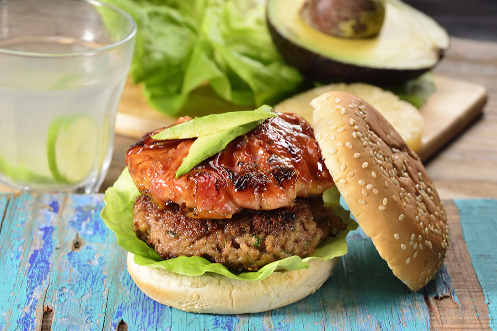
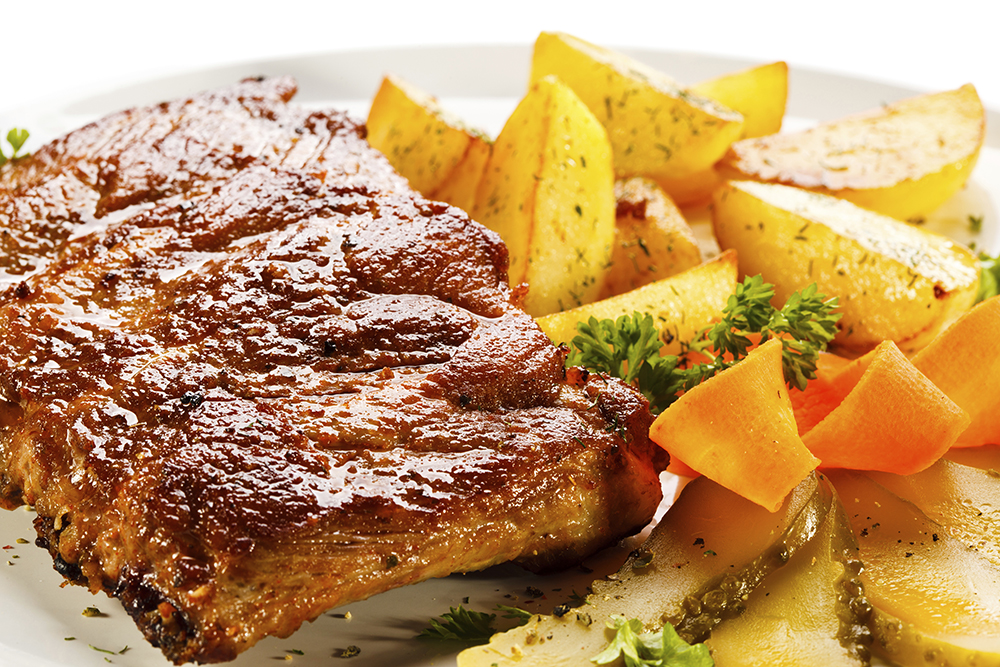
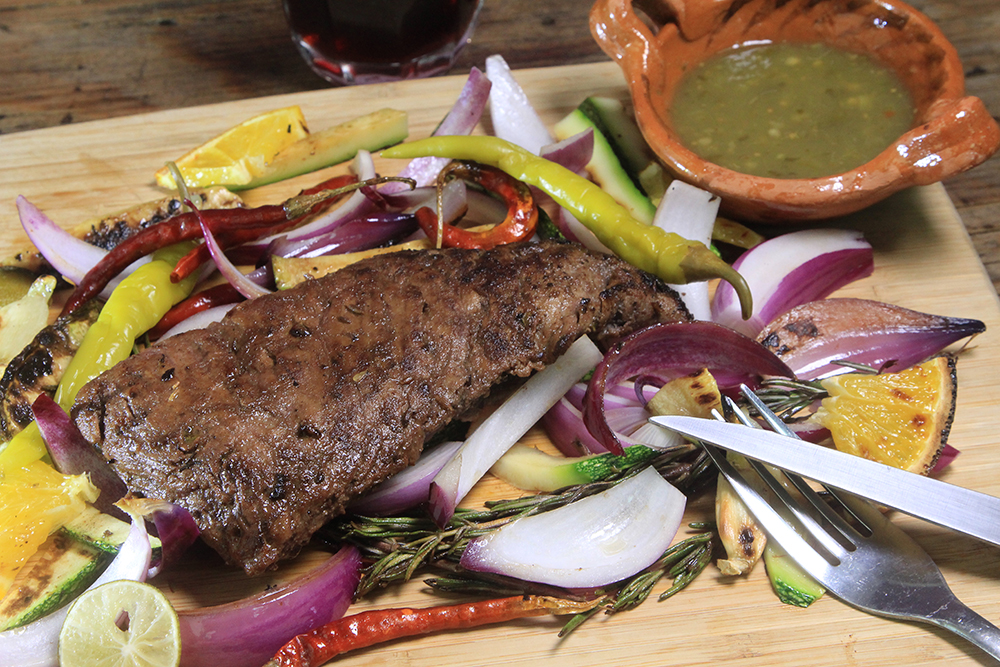
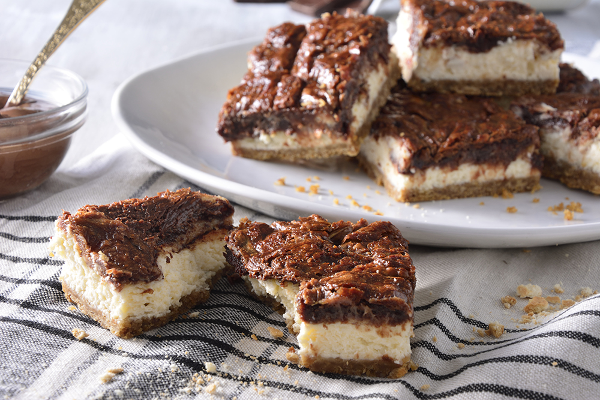
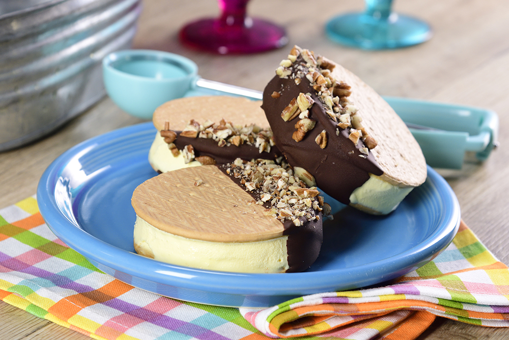
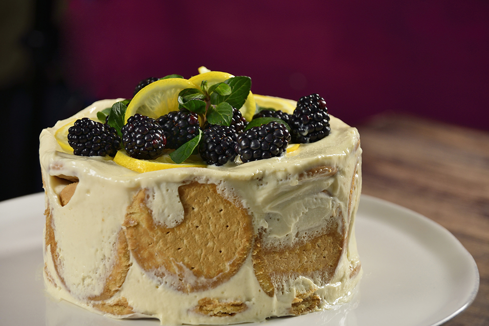

Receta destacada de la semana
Pastel de Chocolate Vienés
Por Maria Avila
- TIEMPO: 40 min
- DIFICULTAD: Baja
- PORCIONES: 10
Deliciosa receta de pastel de chocolate con nueces molidas preparado todo en la licuadora! Prepara este delicioso pastel de en tan solo 20 minutos. Ideal para compartir con la familia en una tarde lluviosa.
RECETAS DE ENSALADAS PARA VERANO
Encuentra deliciosas recetas frescas ideales para el verano. Aprende a preparar una rica ensalada de pollo, ensalada de atún o cualquier ensalada fácil para disfrutar en el calor.
- Ensaladas de Pollo
- Ensaladas de Verduras
- Recetas de Ensaladas de Frutas
- Ensaladas de Atún
- Ensaladas de Papa
- Ensaladas Fáciles de Salmón
- Ensaladas de Pasta
- Aderezos y Vinagretas Caseros
RECETAS DE CARNES ASADAS AL CARBÓN
Encuentra las mejores recetas y tips de carnes asadas al carbón, a tus amigos les encantar. Solo elige tu corte favorito, el ingrediente y sigue los sencillos tips que te ofrecemos.
  - Recetas de pollo asado
- Recetas de cordero asado
- Recetas de cerdo asado
- Recetas de pescado asado
RECETAS DE POSTRES
Las mejores recetas de postres para preparar en cualquier ocasión, sorprende a tu familia, amigos o pareja con estas exquisitas recetas que le encantarán, desde un fondant de chocolate hasta un delicioso cheesecake de fresas.
  - Recetas de pasteles
- Recetas de cupcakes
- Recetas de galletas
- Recetas de pays
- Recetas de panqués
Ganó Nilson
Llegó el tan esperado final de la primera temporada de MasterChef Uruguay, el reality de cocina más importante del mundo, ahora hecho en nuestro país.
En un clima de gran tensión, los cuatro participantes que todavía estaban en carrera se enfrentaron uno contra uno, en dos semifinales determinadas por sorteo: Lourdes vs. Nilson y Leticia vs. Nicolás.
Los dos ganadores, Leticia y Nilson, pasaron a la final, donde tuvieron 120 minutos para sorprender al jurado con tres platos: entrada, plato principal y postre. Pese a los nervios y la presión de la instancia que estaban atravesando, ambos participantes tuvieron un gran desempeño en la última prueba de la competencia, lo que hizo que la decisión del jurado no fuera nada sencilla.
Finalmente, Lucía, Sergio y Laurent dieron su veredicto y Nilson se convirtió en el primer maestro de la cocina de nuestro país. La alegría y la emoción se apoderaron de la cocina de MasterChef Uruguay y el festejo del ganador con su familia y sus excompañeros fue inolvidable.